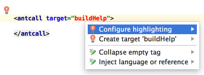

Create missing targets
When you are referring to a non-existing target tag in your Ant build file, IntelliJ IDEA automatically suggests that you create the corresponding tag. This context action will not even make you change your current editing location.
